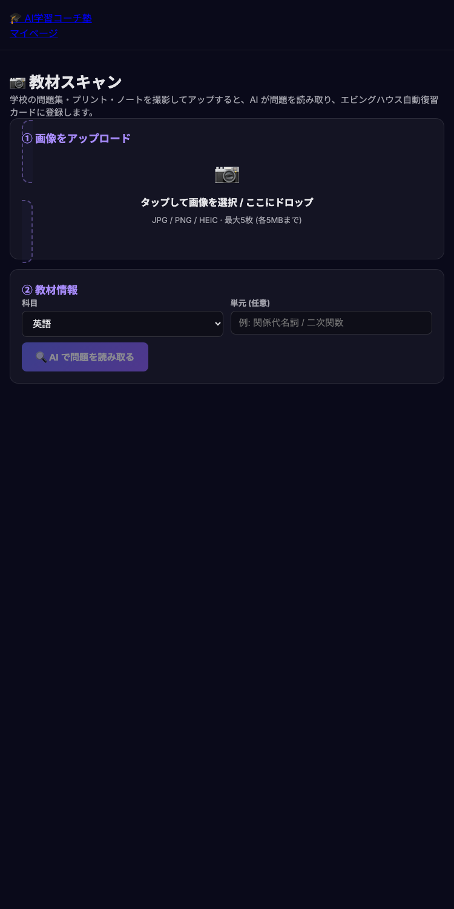
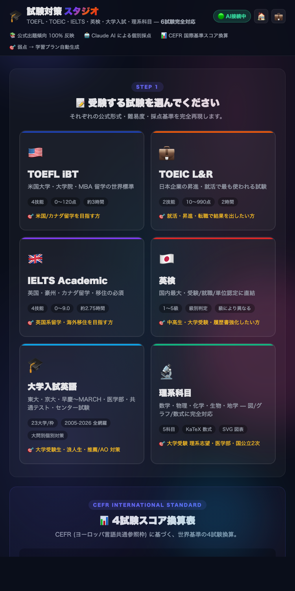
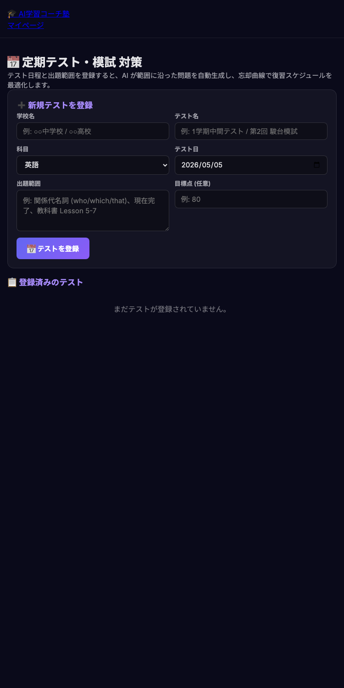
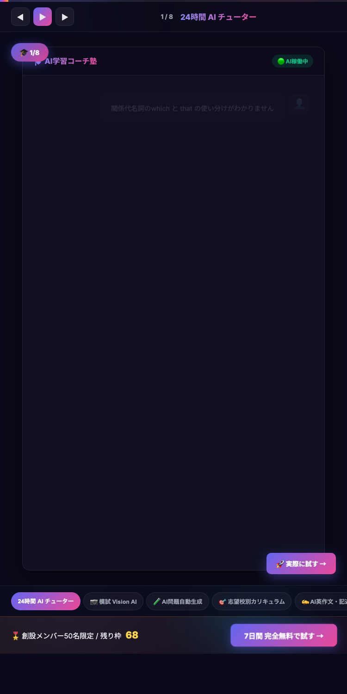
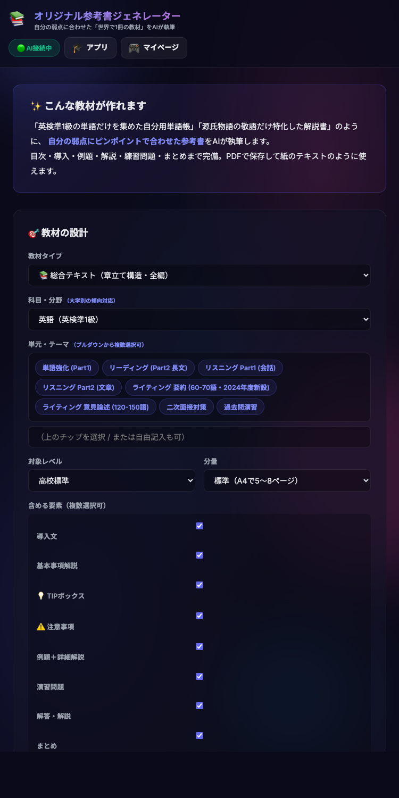

子の月10万、
もう要らない。





中3の息子に、家庭教師を月10万払っていた。 AIに切り替えて3ヶ月、模試の偏差値が8上がった。 月¥14,500。それが現実。 ――― ▼ 何ができるのか (16機能 ALL-IN-ONE) ✓ 24時間 AIチューター (深夜3時の数学も秒で返答) ✓ 紙の参考書を撮影 → 類題10問を即生成 ✓ 志望校から逆算した週次カリキュラム自動編成 ✓ 1度間違えた問題を、忘れる前にAIが出し直す ✓ 英検準1級〜TOEIC 900まで、1アプリで対策 ✓ 23大学の入試対策 (MARCH・関関同立 〜 東大・医学部) ✓ AIスピーキング採点 + 英作文100点満点添削 ✓ 今朝のCNN・NYTから即興読解問題 ✓ 滑り止め校をAIが偏差値・判定から提案 ✓ 東大生3人が問題を検閲し続ける品質保証 ――― 【¥14,500/月 永年保証】 創設メンバー50名限定。契約後も値上げ対象外。 通常¥39,800のところ、永年この価格。 【7日間 完全無料】 クレカ登録なし。自動課金なし。 合わなければ何もせず終了でOK。 【お申込み】 プロフィールのURL、または trillion-ai-juku.com/lp.html 家庭教師月10万も、塾月5万も、もう要らない。 家計を守りながら、子の進路は妥協しない。 そんな第3の選択肢、7日間タダで試してみてください。 #ai塾 #トリリオンai塾 #大学受験 #高校受験 #英検準1級 #英検2級 #toeic #塾選び #家庭教師 #オンライン塾 #自宅学習 #保護者の悩み #早慶 #march #関関同立 #医学部受験 #共通テスト #生成ai